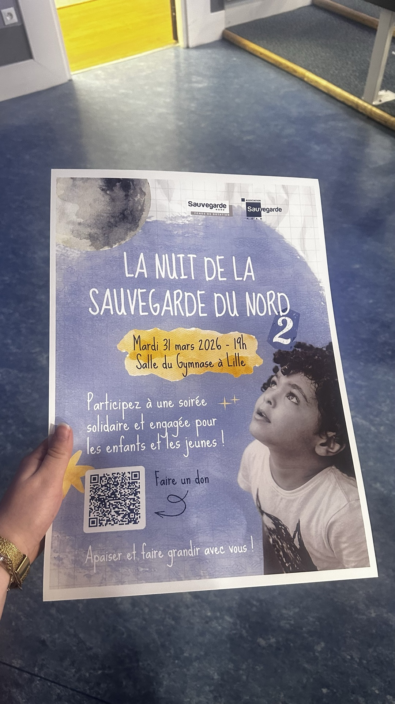

Stage — Service mécénat
La Sauvegarde
du Nord
Stage au sein du service mécénat de La Sauvegarde du Nord. Création des supports de communication, gestion des invitations, coordination avec les prestataires et contribution à la préparation de La Nuit de la Sauvegarde. Une expérience qui a mis en lumière l'importance de rester alignée avec ses valeurs, même dans un contexte professionnel exigeant.


Le contexte
Un stage au cœur d'une association ancrée dans le territoire
La Sauvegarde du Nord est une association dont l'action s'inscrit dans la protection de l'enfance, l'accompagnement des familles et le soutien aux personnes vulnérables dans la région. Son service mécénat joue un rôle clé pour financer ses missions et mobiliser des partenaires autour de ses causes.
Intégrer ce service en stage, c'était rejoindre une équipe dont le travail quotidien a des conséquences directes sur la vie de personnes réelles. Cette responsabilité a guidé chaque action entreprise durant le stage : chaque support de communication créé, chaque invitation gérée, chaque coordination menée devait servir la mission de l'association et honorer la confiance des partenaires mécènes.
L'événement central du stage était La Nuit de la Sauvegarde — une soirée de levée de fonds et de célébration qui réunit chaque année les partenaires, les donateurs et les équipes de l'association. Y contribuer de la phase de préparation à la coordination le jour J a été une expérience complète et formatrice.
Mes missions
Communication, logistique et coordination d'un événement de collecte
- Création des supports de communication print et digitaux pour le service mécénat et La Nuit de la Sauvegarde
- Gestion de la liste des invités et des invitations : personnalisation, envoi, suivi des confirmations
- Coordination avec les prestataires impliqués dans l'organisation de La Nuit de la Sauvegarde
- Suivi administratif et logistique de l'événement : planning, feuille de route, points d'étape
- Contribution à la stratégie de communication du service mécénat
- Participation aux échanges avec les partenaires et mécènes de l'association
Bilan & réflexion
Rester alignée avec ses valeurs dans un contexte professionnel exigeant
Ce stage a été une expérience professionnelle à part entière, avec ses exigences, ses contraintes et ses apprentissages. Mais au-delà des compétences techniques acquises, il a surtout été une occasion de réfléchir à ce que signifie travailler dans un secteur qui porte des valeurs humanistes fortes.
Dans un contexte associatif, les ressources sont limitées et chaque décision a un impact réel. Cette réalité oblige à une rigueur et une créativité particulières — faire beaucoup avec peu, convaincre sans imposer, mobiliser sans contraindre. Ces compétences sont transférables à n'importe quel contexte événementiel, quel que soit le secteur.
Ce stage m'a également rappelé quelque chose d'essentiel : le sens que l'on donne à son travail importe autant que la qualité de ce travail. Être alignée avec ses valeurs professionnelles n'est pas un luxe — c'est une condition pour s'investir pleinement et durablement dans ce que l'on fait.